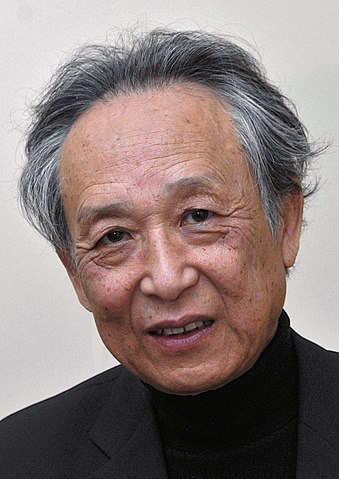
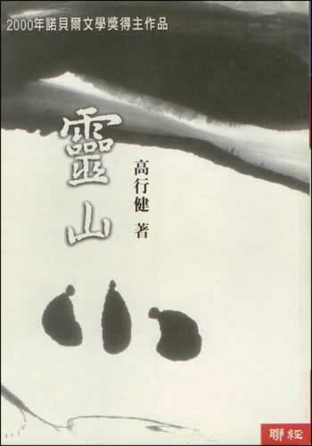
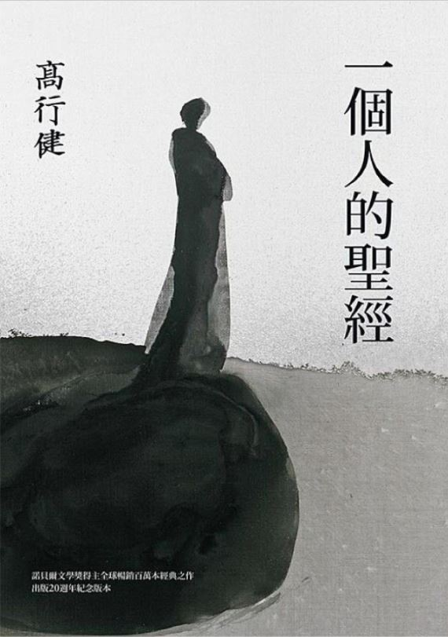

出生：1940年1月4日；中国江西
法籍华裔剧作家、小说家、画家、戏剧和电影导演、摄影家，1980年代末前往欧洲，现为法国公民。他亦是翻译家，尤著于翻译塞缪尔·贝克特和欧仁·尤内斯库的作品。而当中的意识流作品及当中的流亡意识对其他作家有很大的启发。
授奖词：其作品的普遍价值，刻骨铭心的洞察力和语言的丰富睿智，为中文小说和艺术戏剧拉开了新的道路。
|  |
高行健
出生：1940年1月4日；中国江西 法籍华裔剧作家、小说家、画家、戏剧和电影导演、摄影家，1980年代末前往欧洲，现为法国公民。他亦是翻译家，尤著于翻译塞缪尔·贝克特和欧仁·尤内斯库的作品。而当中的意识流作品及当中的流亡意识对其他作家有很大的启发。 授奖词：其作品的普遍价值，刻骨铭心的洞察力和语言的丰富睿智，为中文小说和艺术戏剧拉开了新的道路。 |
|  |
灵山 作家高行健的一部长篇小说，灵山的中国形象以四川省为原型，高行健也凭着这部小说获得2000年诺贝尔文学奖。 小说缘起作者被误诊为肺癌，想要远离被冠之以“真实”的他所处的社会，才有了作者游历长江流域的经历。这份经历正是《灵山》的原始素材。主人公在书中看似在寻找灵山，实则小说描述了“一人的追求内心的平和与自由。” |
|  |
一个人的圣经 1999年初版，一般被视为《灵山》的续作。该书像前作一样具有自传性，描写了作者在文革及流亡西方时期的一系列见闻。书中叙事者继续了《灵山》中的朝圣之旅，探索存在的形而上学意义。在叙事技巧上，《灵山》中的“我”分别以“我”、“你”、“他”来叙述，以制造疏离感。 |